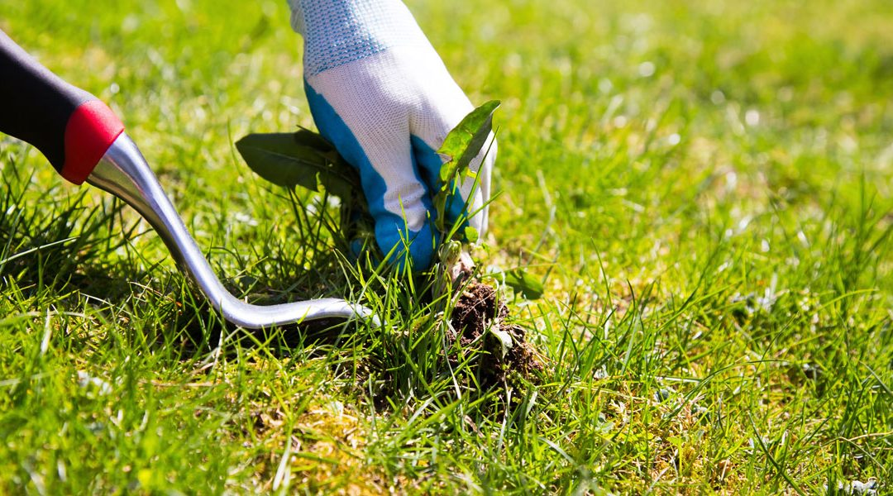

Weed Control & Block Slashing on the Fleurieu Peninsula
Weed control and block slashing on the Fleurieu Peninsula covers two distinct but often related services — targeted herbicide treatment to eliminate lawn and garden weeds, and mechanical slashing of overgrown blocks, paddocks, and vacant land. CWS Lawn and Garden Care provides both across Willunga, McLaren Vale, Aldinga, Mount Compass, and the wider Fleurieu Peninsula.
Weed pressure on the Fleurieu Peninsula is year-round — winter rains bring bindii and broadleaf weeds into lawns, spring accelerates invasive grass species, and summer leaves dry, overgrown blocks at fire risk. CWS uses selective herbicide programs matched precisely to your grass type and weed species, ensuring effective elimination without damaging the surrounding turf or garden.
For block slashing, we deploy commercial-grade slashers and ride-on equipment suited to large vacant blocks, rural land, and properties requiring fire season compliance across the Fleurieu Peninsula — the same equipment used in our acreage mowing service, applied specifically to the clearance of overgrown and non-maintained land.

What's Included in Weed Control & Block Slashing
CWS handles both targeted chemical weed control and mechanical block slashing — fully matched to your property type and the specific weed or vegetation challenge you're facing.
Weed Control
Targeted herbicide treatments for lawns & gardens
Selective Lawn Weed Control
Herbicides matched to your grass variety — safe for Buffalo, Kikuyu, and Couch — that eliminate broadleaf weeds, bindii, and winter grass without harming the surrounding turf. Applied at optimal seasonal timing for maximum effectiveness.
Bindii & Broadleaf Treatment
Bindii is one of the most common lawn weed complaints across Willunga and McLaren Vale — tiny but painful underfoot from late winter through spring. CWS applies targeted treatments before seed set, preventing next season's problem before it starts.
Garden Bed Weed Control
Pre-emergent and post-emergent herbicide applications for garden beds, paths, driveways, and border areas. Eliminates established weeds and creates a treatment barrier that prevents re-germination for months after application.
Invasive Grass & Weed Eradication
Non-selective herbicide treatments for invasive species on rural land, fence lines, and roadsides across the Fleurieu Peninsula — controlling paspalum, kikuyu encroachment into native areas, cape weed, and other declared plant pest species common in SA.
Block Slashing
Mechanical clearance for overgrown blocks & rural land
Vacant & Residential Block Clearing
Overgrown vacant blocks in Aldinga, Sellicks Beach, Willunga, and surrounding areas cleared using commercial slashing equipment. Single visit clearance or ongoing scheduled maintenance to keep the block compliant and presentable throughout the year.
Fire Season Compliance Slashing
Mandatory block slashing for rural, lifestyle, and vacant properties ahead of the Fleurieu Peninsula fire danger season. CWS slashes to the compliant grass height required by the Mount Barker District Council and surrounding councils — typically 10cm — before the season opening each year.
Fence Line & Boundary Slashing
Vegetation growing into and over fence lines on rural Fleurieu Peninsula properties cleared and maintained. Fence line slashing prevents structural damage from encroaching growth, improves access for maintenance, and reduces fire risk along property boundaries.
Development Site Clearance
Pre-development vegetation clearance for building sites and subdivision land across the Fleurieu Peninsula. CWS coordinates block slashing with development schedules, ensuring one consistent team throughout the clearance and pre-construction phase.
Common Weeds CWS Treats Across the Fleurieu Peninsula
Identifying the right weed — and matching the right treatment to your grass type — is what separates effective weed control from a wasted application. Here are the most common species CWS treats across Willunga, McLaren Vale, and the Fleurieu Peninsula.
Bindii
The most painful weed on Fleurieu Peninsula lawns — small, flat rosettes with spiny seed heads that develop from winter through spring. Most effective when treated before flowering in late July to August.
Cape Weed
Dominant in Willunga and McLaren Vale lawns and paddocks through winter and spring — forms dense mats that smother turf and pasture. A declared pest plant in South Australia requiring active management.
Winter Grass
Light green tufts appearing in lawns through autumn and winter — particularly visible in Buffalo and Couch lawns across Willunga. Germinates prolifically in cool, moist conditions and seeds before most homeowners notice it.
Clover
Clover spreads rapidly through Fleurieu Peninsula lawns during spring — visible as three-leafed rosettes and white flowers that attract bees. Indicates low lawn nitrogen — weed control combined with fertilising prevents rapid recurrence.
Paspalum
A coarse, clumping grass weed common in Willunga and McLaren Vale lawns — particularly visible in Buffalo and Couch turf. Spreads through seed heads and rhizomes, becoming increasingly difficult to control once established.
Dandelion
Deep-rooted broadleaf weed appearing year-round in Fleurieu Peninsula lawns and garden beds. Requires herbicide treatment that translocates fully to the taproot — surface chemical treatment causes rapid regrowth from root fragments left in Willunga's clay soils.
Wild Oats
Tall, fast-growing annual grass common on rural Fleurieu Peninsula blocks through spring. Dries to a highly flammable standing fuel load by November — a significant fire risk on unmanaged lifestyle blocks and vacant land around Willunga and Mount Compass.
Thistles
Multiple thistle species are widespread across Fleurieu Peninsula rural properties — Scotch thistle, variegated thistle, and saffron thistle are all notifiable weeds in SA. CWS treats thistles using targeted herbicide in the rosette stage for most effective control.
Not sure which weed is affecting your lawn or property? Get a free quote from CWS — we'll identify it and recommend the right treatment at no obligation.
Fleurieu Peninsula Property Compliance Checklist
Rural, lifestyle, and vacant land owners on the Fleurieu Peninsula have annual weed and fire management obligations. CWS helps you meet every one of them.
Fire Season Requirements
Grass Cut to 10cm or Below
Mount Barker District Council and surrounding councils require grass on rural and lifestyle properties to be slashed to 10cm or less before the fire danger season opening — typically October 1 each year.
Fence Lines & Road Verges Clear
Vegetation along fence lines, road frontages, and property boundaries must be maintained to reduce fire spread risk between properties and across public roads on the Fleurieu Peninsula.
Dead Vegetation Removed
Dead grass, dried weed stalks (including wild oats and thistles), and standing dry vegetation must be cleared before the fire danger period — these represent the highest risk fuel loads on Fleurieu Peninsula properties.
Maintained Throughout Summer
Block slashing in September alone is not sufficient. Properties must remain compliant throughout the fire danger season — ongoing monthly slashing visits from CWS keep your Fleurieu Peninsula property continuously compliant through summer.
Weed Management Obligations
Declared Weeds Must Be Controlled
South Australia's Natural Resources Management Act requires landowners to control declared pest plants on their properties. CWS treats all SA-notifiable species including cape weed, variegated thistle, Scotch thistle, and saffron thistle across the Fleurieu Peninsula.
Prevent Spread to Neighbouring Land
Landowners are responsible for preventing the spread of declared weeds to neighbouring properties. Untreated thistles and cape weed seeding onto adjacent land can trigger formal council notices — CWS seasonal programs prevent this before it becomes a problem.
Annual Treatment Program Required
A single weed spray is rarely sufficient — most Fleurieu Peninsula weed species require two to three treatment windows per year for effective long-term control. CWS designs a seasonal program matched to the weed species and your property's specific conditions.
Treatment Records Recommended
Maintaining records of weed treatment dates and products used is advisable for rural landowners on the Fleurieu Peninsula. CWS provides simple service documentation after every weed control visit for your property management records.
CWS handles your Fleurieu Peninsula weed and fire compliance obligations — so you don't have to track them yourself. Call us before fire season to book your block slashing program.
Signs Your Property Needs Weed Control or Block Slashing
Fleurieu Peninsula properties face distinct weed and vegetation pressure throughout the year — here's when to act.
Weeds Spreading Faster Than Mowing
When weeds like bindii, clover, and cape weed keep returning despite regular mowing, mowing alone isn't addressing the problem — it's spreading the seed. Targeted weed control treatments break the cycle at the root and seed stage, preventing re-establishment season after season.
Approaching Fire Danger Season
If your Fleurieu Peninsula property has long grass or dry standing vegetation heading into October, block slashing is urgent. Fire season compliance notices from council carry fines — and CWS books up quickly in September. Book your pre-fire slashing before the season, not after.
Bindii Causing Pain Underfoot
If bindii spines are appearing in your lawn through spring, the weed has already set seed for next year. Treat now to kill existing plants and prevent the seed bank from building further — the most cost-effective time for bindii control is July to August before seed development.
Vacant Block Becoming Unmanageable
A vacant block left unattended through winter and spring on the Fleurieu Peninsula can develop a dense vegetation cover in a single season. CWS block slashing restores it to a manageable state in a single visit — and scheduled follow-up visits prevent it from returning to that state.
Thistles or Cape Weed Spreading
Thistle and cape weed infestations on Fleurieu Peninsula rural properties worsen rapidly if not treated in the rosette stage — both are declared weeds in SA with legal management obligations. CWS treats these at the most effective growth stage for maximum kill rate and minimum re-seeding.
Property Going on the Market
A block or rural property with visible weed infestations or overgrown vegetation creates a poor first impression at sale. Professional weed control and block slashing before listing demonstrates managed, compliant land — particularly important for lifestyle and rural property buyers on the Fleurieu Peninsula.
Our Weed Control & Block Slashing Process
Four steps from enquiry to a weed-free, compliant, cleared Fleurieu Peninsula property.
Free Quote Request
Call 0402 559 065 or submit the quote form. Tell us your property location, the weed type or block size, and what outcome you need — compliance, lawn improvement, or clearance.
Property Assessment
We visit your Fleurieu Peninsula property to identify weed species, assess weed pressure or vegetation density, confirm grass type for weed control, and determine the right treatment or slashing approach.
Treatment or Slashing
We carry out the agreed service — targeted weed control at optimal seasonal timing, or block slashing using commercial equipment matched to your block size and vegetation type. Fixed price, no hidden extras.
Seasonal Follow-Up Program
Effective weed control and block management requires more than one visit. CWS schedules follow-up treatments and slashing visits throughout the year to keep your property weed-free and compliant through every season.
Why Choose CWS for Weed Control & Block Slashing
Correct Identification Before Treatment
Using the wrong herbicide on the wrong weed — or applying a non-selective weed killer to a Buffalo lawn — causes turf damage and wasted spend. CWS identifies every weed species before selecting a treatment, ensuring the right product at the right timing, every time across the Fleurieu Peninsula.
Fire Season Compliance Expertise
We understand the specific council requirements for block slashing on the Fleurieu Peninsula — Mount Barker District, Alexandrina Council, and surrounding local government areas. CWS helps you achieve and maintain compliance without having to track the requirements yourself.
Seasonal Programs, Not Single Visits
A single weed spray doesn't solve a weed problem — it delays it. CWS builds annual treatment schedules around the Fleurieu Peninsula's seasonal weed germination windows, treating each species at the point of maximum vulnerability to achieve lasting, cost-effective control.
Fully Insured & Licensed
All CWS herbicide applications are carried out with appropriate product handling and full public liability insurance. Your property, neighbouring land, and our team are fully covered on every weed control and block slashing visit across the Fleurieu Peninsula.
CWS Weed Control at a Glance
Recent Weed Control & Block Slashing Across the Fleurieu Peninsula
From bindii and broadleaf weed programs in Willunga lawns to fire-season block slashing on rural Fleurieu Peninsula properties — here's a look at the weed control and clearance work CWS delivers across the region.

Weed Control & Block Slashing Across the Fleurieu Peninsula
CWS provides professional weed control and block slashing services throughout the Fleurieu Peninsula — from the residential suburbs of Willunga, McLaren Vale, and Aldinga through to the rural lifestyle blocks and paddocks of Kuitpo, Whites Valley, Encounter Bay, and Mount Compass.
Weed species, fire risk, and compliance requirements vary across the Fleurieu Peninsula — coastal properties near Sellicks Beach and Port Willunga face different weed pressures than the clay-soil rural blocks inland around McLaren Flat and Kuitpo. CWS's local knowledge means treatments are timed and targeted to match the specific conditions in your suburb, not a generic regional approach.
Not sure if we cover your property? Call 0402 559 065 — we service far more of the Fleurieu Peninsula than most property owners expect.
Frequently Asked Questions About Weed Control & Block Slashing
Answers to what Willunga and Fleurieu Peninsula property owners ask most about weed control, block slashing, and fire season compliance.
What is the difference between weed control and block slashing? +
Weed control uses targeted herbicide treatments to eliminate specific weed species from lawns, garden beds, and rural land — killing plants chemically at the root and seed stage. Block slashing uses mechanical equipment (ride-on slashers and mowers) to cut down overgrown vegetation on vacant, rural, or unmanaged land. Both services are often used together on Fleurieu Peninsula properties — slashing reduces the bulk vegetation, then herbicide controls regrowth and weed seeds.
When is the best time to treat bindii in Willunga and McLaren Vale? +
The most effective time to treat bindii on the Fleurieu Peninsula is late winter to early spring (July to August), before the plant develops its painful prickles (seeds). Treating bindii after the spines have formed will kill the plant, but the spines will remain in your lawn until they naturally break down. Early treatment prevents the seed bank from replenishing for the following year.
Do I need to slash my block for fire season on the Fleurieu Peninsula? +
Yes. Local councils across the Fleurieu Peninsula (including Mount Barker District and Alexandrina Council) issue mandatory fire hazard reduction notices requiring property owners to slash long grass and weeds on vacant blocks, rural living properties, and fence lines before the fire danger season begins (typically October/November). Failure to comply can result in council fines and the council undertaking the work at your expense.
Will weed control herbicides damage my Buffalo lawn? +
Not when applied correctly by a professional. CWS uses selective herbicides specifically formulated to be safe for Buffalo, Kikuyu, and Couch lawns. Many off-the-shelf weed killers from hardware stores will severely damage or kill Buffalo grass if applied incorrectly. We identify your grass type before selecting and applying any herbicide.
How often do I need to spray for weeds on the Fleurieu Peninsula? +
Effective weed control is rarely achieved with a single spray. Most Fleurieu Peninsula properties require a seasonal program — typically two to three visits per year — to target different weed species as they germinate across autumn, winter, and spring. CWS builds a custom treatment schedule based on the specific weed pressures on your property.
Are thistles and cape weed declared weeds in South Australia? +
Yes, several thistle species (including Scotch, variegated, and saffron thistle) and cape weed are declared pest plants in South Australia under the Landscape South Australia Act. Landowners have a legal responsibility to control these weeds on their properties and prevent them from spreading to neighbouring land. CWS provides targeted treatment programs to help rural and lifestyle property owners meet these obligations.
Ready to Eliminate Weeds or Slash Your Fleurieu Block?
Whether you need targeted lawn weed control, fire season block slashing, or a full weed management program across your Fleurieu Peninsula property — CWS arrives with the right products, the right equipment, and the local knowledge to get it done properly.
Call now or submit a quote request. We'll assess your property for free and come back with a clear price and seasonal treatment plan.